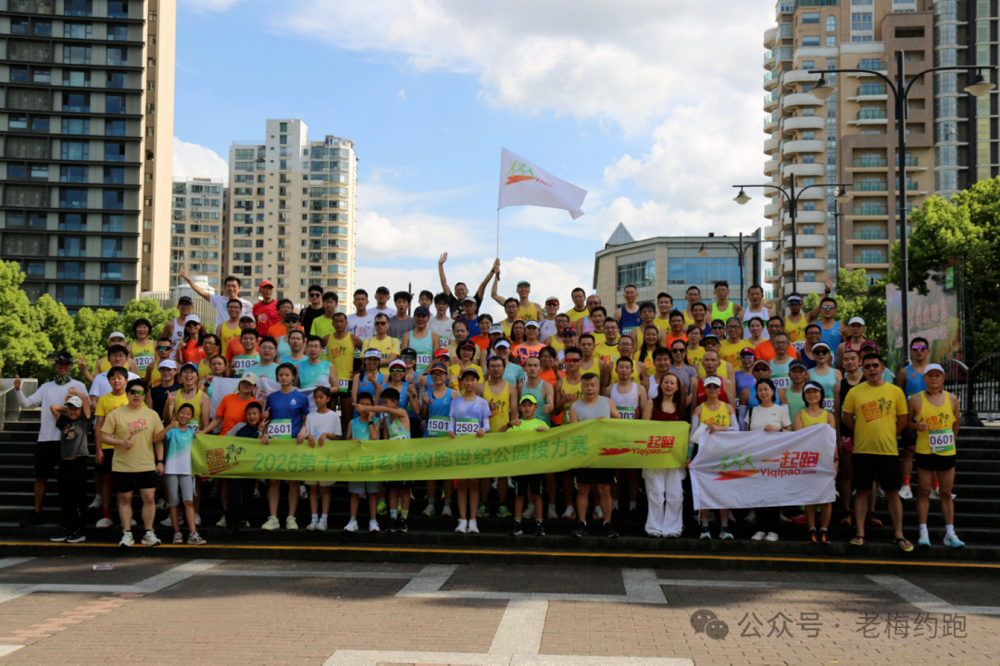

上海世纪公园
周五19:00
周日冬季 14:00–17:00夏季 15:00–18:00
集合地点世纪公园7号门往东50米公交站台
风雨无阻 · 雷暴取消
RUNNING ARCHIVE
跑团档案
周报、接力赛、人物与训练故事，都在这里按时间慢慢积累。
这个月份的内容还在整理可以先查看其他月份或全部内容。
ANNUAL RELAY
一年一棒，跑成传统
年度接力赛拥有独立档案：历届回顾、成绩、照片，以及每一个共同完成它的人。
ABOUT YIQIPAO
关于一起跑
一起跑于 2004 年建立，以“健康、快乐、分享”为理念，主要约跑地点包含世纪公园、北滨江、顾村公园、大宁灵石公园。在世纪公园分支，老梅长期组织约跑和训练，大家也习惯称为“老梅约跑”。本站主要记录与分享“老梅约跑”的活动与故事。
CONTACT US